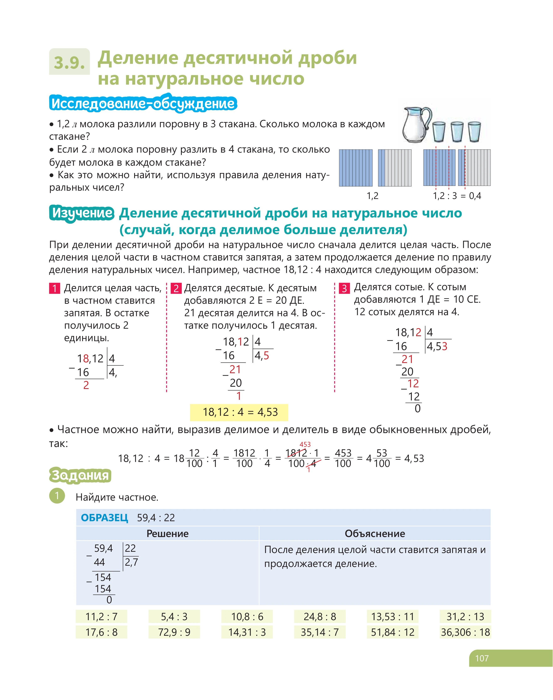
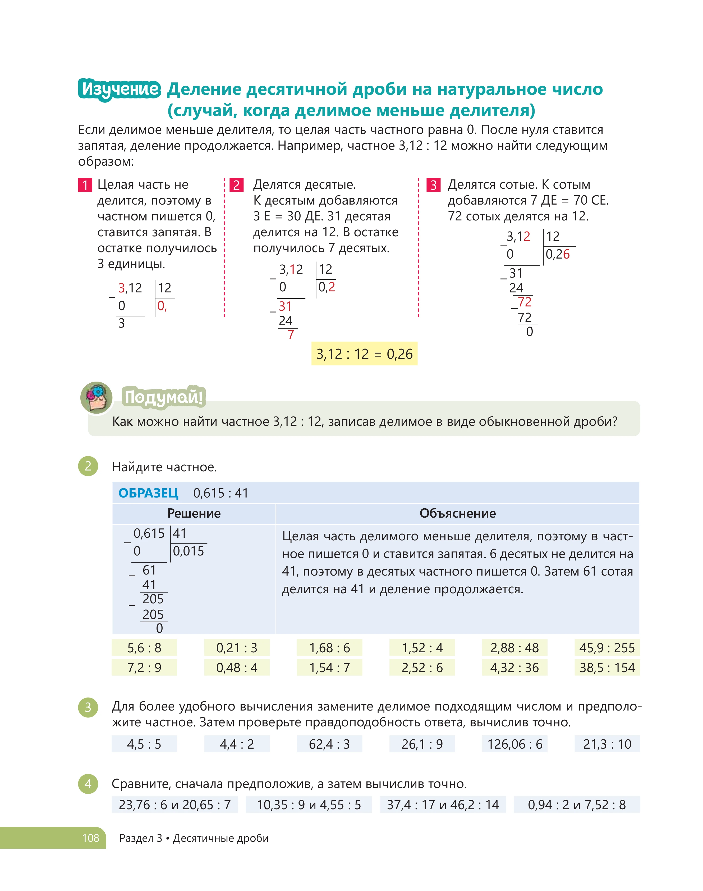
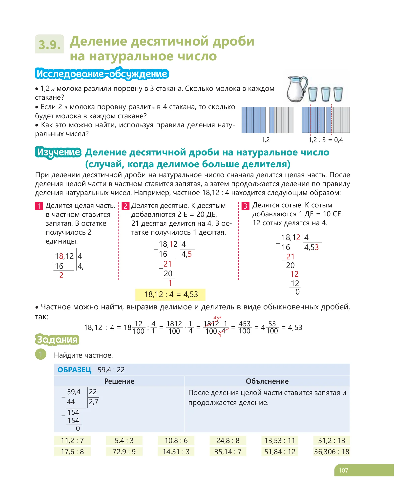

Lesson 14. Как умножить 0,4 на ¾? Как разделить 1,8 на 4/3? Интерактивный курс с визуализацией, алгоритмом и практикой.
Переводите десятичную дробь в обыкновенную или наоборот — и выбирайте удобный путь.
Скобки, умножение, сложение и вычитание — чёткая очерёдность в одном выражении.
Как перевести 2½ в 2,5 и работать с ним в десятичных вычислениях.
Комбайны, туристы и яблоки — решаем задачи из учебника шаг за шагом.
Листайте слайды вперёд и назад. Каждый слайд — одна законченная мысль из страниц учебника.


